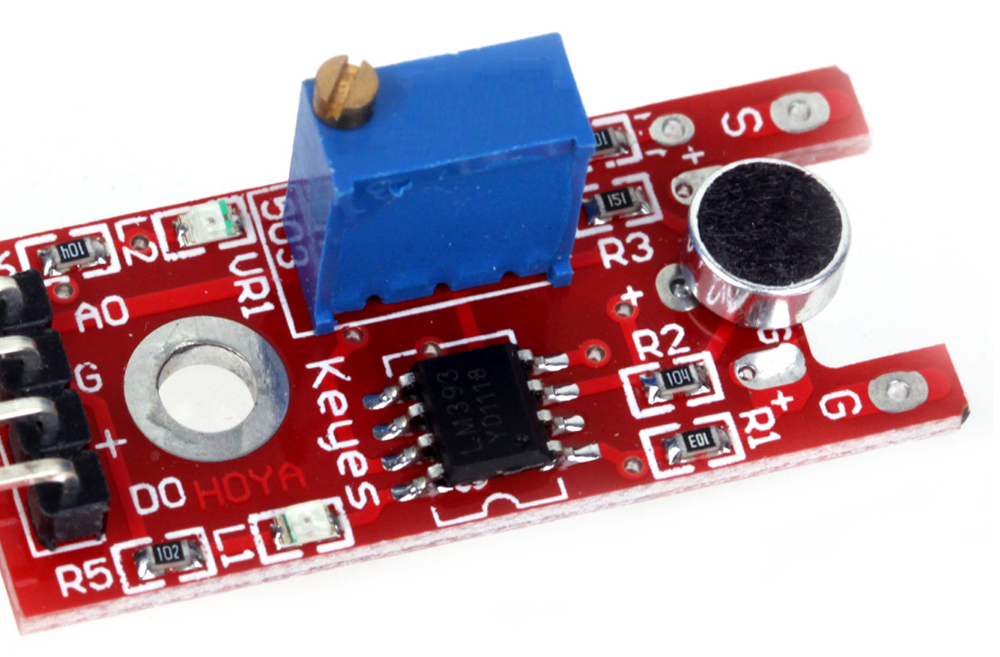

Project: Interpreting whistle commands with an Arduino
Last March I went looking for inspiration to start a new, exciting Arduino project. Picky as I am, I wanted something (a) low-cost, (b) original, and (c) with an actual application in the real world.
I went through a couple of mediocre ideas until I saw this guy on YouTube that had recreated Yondu’s arrows from the Guardians of the Galaxy movies. The project focused mostly on the arrows, which launched using fireworks at a single whistle (and probably any loud sound). For me however, I was more interested in actually using complicated whistle commands to control something. Combining this idea with a tiny $10 drone I ordered a couple of weeks ago… you get the idea.
Usage and vision
As of now, I have a working prototype for some basic whistle command detection. There’s not enough precision in it to steer a drone just yet, but enough to activate a fan, or a light switch. Or a music installation. Or a sunshade.
The list goes on, and I’m sure you have some ideas of your own as well. That’s why I’m sharing this project. For those who want to dive straight in: GitHub link. Or read on for more on the hardware below.
Hardware
The program exists of both a Java and an Arduino part, which means you will need to keep your Arduino connected to a computer for the functionality to work. This computer could be a Raspberry Pi, but (especially while testing) it might be handy to have something with a monitor.
Anyway, a comprehensive list of all the items you’ll need:
- Computer that can run Java (monitor recommended)
- Arduino
- USB cable to connect them together
- Microphone (simple, see below)
- Wires (to connect the mic to the Arduino)
As stated, you’ll just need a very simple microphone component (one that reads decibels). I used the KY-038 which only costs about $2. If you want to go with a more advanced microphone for e.g. increased range, you can, but you may need to rewrite the Arduino part of the code.
The microphone component I used, a KY-038
For more information on the responsibilities and possibilities of both parts, see the ‘Technical details’ section in the Github readme. There’s also instructions on how to add your own whistle combinations and actuators to the Java code.
In closing, if you have been able to use this contraption for something, I’d love to hear about it! Feel free to comment below or contact me on GitHub. All questions, comments and contributions are warmly welcomed.
Repository link: https://github.com/hans-k/whistle-command-interpreter.